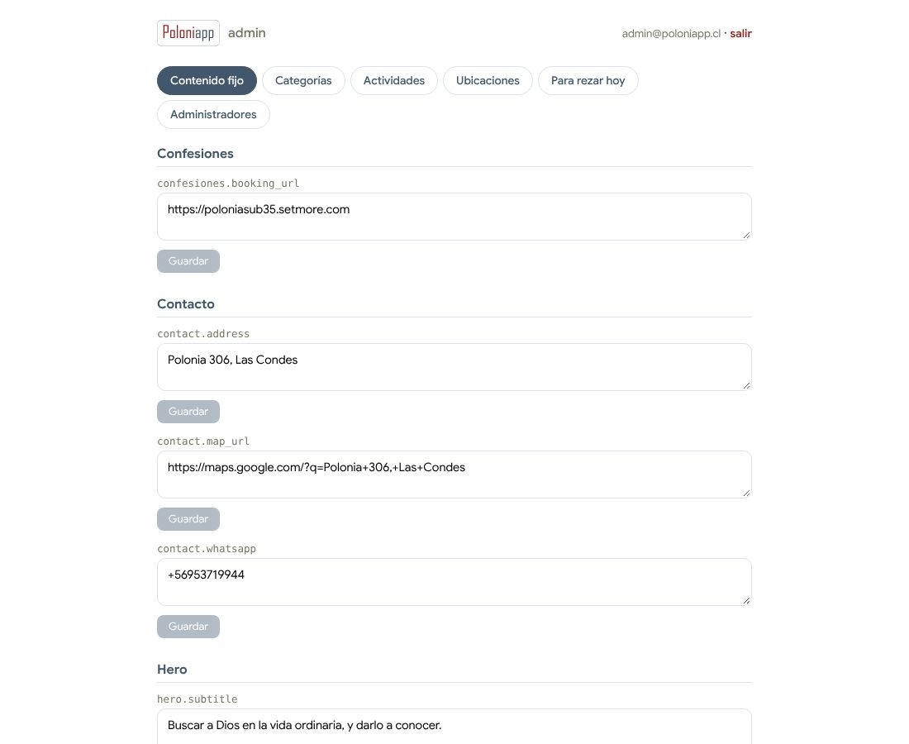
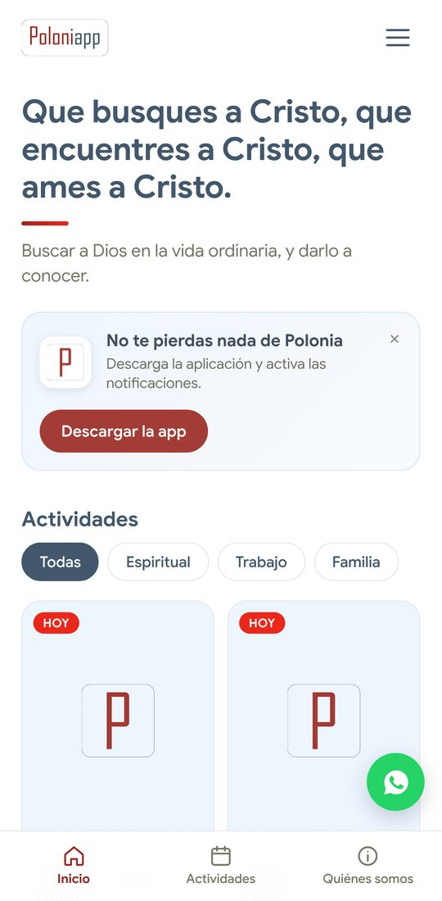

Manual para administradores
Cómo mantener al día el contenido de Poloniapp sin depender de un desarrollador.
1 Entrar al panel
Entra a poloniapp.cl/admin e inicia sesión con tu email y contraseña. Si todavía no tienes cuenta, pídele a otro administrador que te la cree desde la pestaña Administradores.
2 Editar un texto
En la pestaña Contenido fijo están todos los textos del sitio agrupados por sección (Hero, Quiénes somos, Contacto…). Cada campo tiene su propio botón Guardar.

La pestaña "Contenido fijo": cada bloque es una sección del sitio.
3 Ver el cambio en el sitio
El sitio lee el contenido directamente de la base de datos: apenas guardas, el cambio ya está publicado. Solo recarga la página del sitio.

El inicio: la frase principal y su bajada vienen de "Contenido fijo"; las actividades, de la pestaña "Actividades".
4 Crear o editar una actividad
En la pestaña Actividades puedes editar las existentes o crear una nueva al final de la lista. Después de crearla, agrégale sus sesiones:
- Con fecha (un retiro, una charla): completa la fecha y la hora.
- Semanal (un círculo): deja la fecha vacía y escribe el día, por ejemplo
Lunes. En el inicio aparece solo el día que corresponde.
La sección Inscripción (opcional) define el botón "Inscríbete aquí" del sitio:
- Por WhatsApp: escribe el número y el sitio arma solo el link de WhatsApp con un mensaje de inscripción.
- Por link: pega el link de un formulario o página.
- Sin inscripción: el sitio no muestra ningún botón.
5 Subir una imagen
Los campos de foto (actividades y la imagen de "Quiénes somos") tienen un botón para subir un archivo desde tu computador o celular. Eliges el archivo, se sube solo y aparece una vista previa. Después presiona Guardar para confirmar.
6 Para rezar hoy
La sección "Para rezar hoy" del inicio muestra cada día el título del Evangelio, la meditación y el texto del día de opusdei.org, y cada título abre su página. Funciona sola. Si opusdei.org no permite la lectura automática, se muestra un título con la fecha y el link sigue funcionando. Si quieres, en la pestaña Para rezar hoy puedes escribir los títulos de ese día a mano.
7 Salir
Arriba a la derecha del panel, presiona salir.